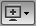

Read this section for information about using the ZenVMware ZenPack to collect information from a vCenter Server.
The ZenVMware ZenPack lets you collect information to monitor your VMware infrastructure. By entering a single set of connection parameters, you allow Resource Manager to:
Obtain the names and properties of various entities in your VMware infrastructure
Monitor metrics collected by VMware
Retrieve VMware events
Resource Manager extracts VMware information through the VMware Infrastructure (VI) SDK, VMware's SOAP interface to its line of server virtualization products. The SDK can be accessed from an individual ESX server or vCenter Server (previously, VirtualCenter Server) instance, which can return information about many ESX servers.
For more information about VMware infrastructure, see VMware's Introduction to VMware Infrastructure
VMware records a wide range of events that are available through the VI SDK. Resource Manager extracts these events and makes them available in the event console.
The device column shows the ID of the VMware entity with which the event is associated, unless the event is specific to a guest VM. In that case, the Device column shows the ID of the host, and the Component column displays the ID of the guest.
Resource Manager maps the VMware event to the event class and assigns the event a severity level. The event class appears in the Event Class column.
To see detailed event information and the original VMware event type, double-click the event row.
The VMware event type is the value shown for eventGroup.
When a VMotion guest migrates from one host to another, VMware records events to signal its progress. When a VmMigrated event occurs, it is duplicated to become two events, which are mapped to the /VMware/Migration event class in Resource Manager. One event contains the originating host as the device; the other lists the destination host as the device.
An event command (navigate to Events > Event Manager, and then select Commands in the left panel) reacts to these events by remodeling the two hosts and generating an updated view of the guests. The time required to produce updated guest lists (from the time migration completes) is between 30 seconds and four minutes.
Table 59.1. Prerequisites
| Prerequisite | Restriction |
|---|---|
Product | |
Required ZenPacks | ZenPacks.zenoss.ZenVMware ZenPacks.zenoss.StorageBase ZenPacks.zenoss.DynamicView |
VMware VI API | Compatible with VMware Infrastructure 3 (including ESX Server 3.5, VirtualCenter Server 2.5, and ESX Server 3i) and vSphere 4 and 5 (including ESX 4, ESXi 4 and 5, vCenter Server 4 and 5). It is not explicitly compatible with ESX Server 3.0.x or VirtualCenter Server 2.0.x, or any previous versions. |
Warning
If the time on the monitored VC/ESX server is too far from the time on the box where the zenvmwareperf daemon is running, the daemon will not collect any data.
Follow these steps to begin monitoring your VMware servers.
From Infrastructure > Devices, select Add VMware Infrastructure from .
The Add VMware dialog appears.
Enter parameters to connect to the ESX server or vCenter Server that will provide monitoring capabilities.
Name or ID -Enter a name for the infrastructure to be monitored.
Host - Enter the hostname of the server providing the VI SDK connections. This can be an individual ESX server or the location of a vCenter Server instance.
Use SSL - Select this option if the connection should be made by using SSL encryption.
Username - Enter the user name used to authenticate.
Password - Enter the password used to authenticate.
Collector - Select the collector to use to retrieve information from the VI SDK endpoint.
Click .
Resource Manager begins modeling the VMware infrastructure. It places the information in the device hierarchy under
/Devices/VMware/ID, where ID is the value of the ID field you entered during setup.
Resource Manager represents these VMware entities as devices:
Hosts (ESX servers)
Resource Pools
Data stores
Clusters
Each of these categories is represented as a device class under the newly created organizer. For example, if the ID of an infrastructure is esxwin, then four device classes appear below /Devices/VMware/esxwin: Clusters, Datastores, Hosts, and ResourcePools.
If the SDK endpoint is an individual ESX server, then the Clusters organizer will be empty. (A VMware cluster is a concept external to an individual host.)
To view guest VMs on an ESX server:
Navigate to a device in the Hosts class.
Select VMware Guest in the host's component tree (in the left panel).
The Virtual Guest Devices list appears.
In the list, the first column contains a link to the guest component, named the same name as the VM. (This is not necessarily the same as the VM hostname.) If the VM has been modeled elsewhere in Resource Manager, then a link to that device appears in the Managed Device column.
As shown in the previous figure, none of the VMs are being monitored in their "native" device classes. For example, the guest named "ldap test box" is a Linux VM with the hostname "public-demo.zenoss.loc." If you add that device to /Devices/Server/Linux, a link will appear.

Click the Name link to go to the Guest component status page, which shows the VM's relationships to other VMware entities, and provides access to VMware-specific metrics and events.
Click the managed device link to go to the Device status page, which contains information about the device as a separate Linux or Windows server. These two status pages link to each other.
Follow these steps to enable gathering of VMware host and guest statistics.
By default, data collection using resxtop statistics is disabled. To enable it:
From the Resource Manager interface, select Advanced, and then select Monitoring Templates.
Locate and select the VMwareHost_esxtop template.
For each of the data sources:
Click the data source to open it.
Select the Enabled option to enable data collection.
Click Save.
Data collection will begin shortly after update, followed by visible graph data.
For information about the collected data, see Section 7, "Batch Mode," in the document titled "Interpreting esxtop Statistics" at the following location:
By default, data collection using resxtop statistics is disabled. To enable it:
From the Resource Manager interface, select Advanced, and then select Monitoring Templates.
Locate and select the VMwareGuest_esxtop template.
For each of the data sources:
Click the data source to open it.
Select the Enabled option to enable data collection.
Click Save.
Data collection will begin shortly after update, followed by visible graph data.
For information about the collected data, see Section 7, "Batch Mode," in the document titled "Interpreting esxtop Statistics" at the following location:
In Resource Manager, metric-bearing VMware entities (such as Hosts, Guests, and Clusters) have associated templates. These templates define which metrics are gathered. By default, only a subset is collected; however, you can add more by adding data sources to the templates. Once created, you can then create custom graphs from these data sources.
To create a custom data source:
Navigate to Advanced > Monitoring Templates and select the template to which you want to add the data source.
From the Data Sources area, click to add a data source.
The Add Data Source dialog appears.
Enter a name and select the
VMwaredata source from the list of options, and then click Submit.Double-click the newly created data source to edit it. Enter or select values:
Event Key - Not used.
Severity - Not used.
Group, Counter, and Rollup Type - VMware-specific data points are determined by this trio of strings. For information about each of these metrics, see the chapter titled "Performance Counters Reference" in the VI SDK Programming Guide.
Instance - Certain metrics are further specified by an instance name. For example, the metric whose Group/Counter/Rollup Type triplet is Network/Network Data Receive Rate/average requires the name of the actual interface for full specification. In Resource Manager, this metric is represented by the data source nicRx on the template VMwareNic. The VMwareNic template is bound to the individual host interfaces, each of whose ID is the interface name. In this case, the instance name is ${here/instanceId}.
Click to save the new data source.
If you move a VMware device to a different collector, you must follow one of these procedures to force the changes to take effect:
Restart the collector daemons. To do this, go to Advanced > Settings, select Daemons in the left panel, and then click Restart in the row for each of these daemons:
zenvmwaremodeler
zenvmwareperf
zenvmwareevents
Note
Alternatively, as user zenoss, enter the following commands to stop and then restart these Resource Manager daemons:
zenvmwaremodeler restart zenvmwareperf restart zenvmwareevents restart
OR
Navigate to the page for the organizer that represents the VMware endpoint (for example,
Devices/VMware, myEndpoint), and then select Push Changes from the Action menu.
Table 59.2. Daemons
| Type | Name |
|---|---|
Modeler | zenvmwaremodeler |
Performance Collector | zenvmwareperf |
Event Collector | zenvmwareevents |
These collector daemons offer options for tuning performance. Use them to control data amounts and the rate at which data comes back to be modified.
zenvmwareperfTable 59.3. Daemons
Option Description --callChunkSize=ValueSpecifies the number of performance requests to submit at the same time.
--callChunkSleep=ValueSpecifies the time to sleep, in seconds, between performance requests.
zenvmwareeventsTable 59.4. Daemons
Option Description --eventChunkSize=ValueSpecifies the number of events to gather at one time.
--eventChunkSleep=ValueSpecifies the time to sleep, in seconds, between event requests.

{kind=link}
{kind=link}
{kind=link}
{kind=link}
{kind=link}
{kind=link}
{kind=link}
{kind=link}
{kind=link}